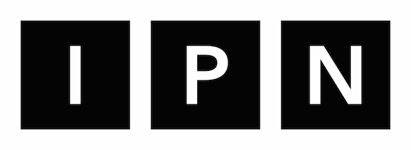
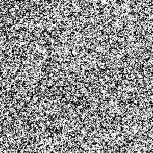

FAQ
iTunes
RSS
Email
时尚怪物
买下巴黎
海淘以及如何海淘
咸鱼翻身的品牌与很快过气的网红
七夕穿搭
(Hi)story
第二次番外放送
把 holy shit 穿在身上的人
初来乍到的番外篇
真人版辛普森一家（那些你我心中的最佳喜剧类之一）
选·美
数据如何改变竞选
FDA 的是与非
Fisher v. University of Texas, 2016
民主党党代会
硬影像
Ecstasy
iMage
中国意境已经不再重要
群组动画的精髓是人工智能
太医来了
杨永信与网瘾惩戒治疗
姑娘，棉条给你自由
不是每个男人都能拥有前列腺高潮
从奥运会到运动损伤

無次元
洋人大笑
Read your Bible, mothafuckas!
为啥勿可以？Why not?
Otaku Pianist（御宅钢琴家）
味之道
写给生蚝的第二封情书
大热天时，就想吃凉凉的荞麦麵
闲话顺德
新加坡米其林榜单点评
一天世界
推广方言不等于对抗普通话
正宗 + 文化多元 = 「世界之窗」
YMO、Exotica、和触电般超越理性的心动
让国际主义风格再次终结
博物志
我爱南京之三：博物馆志愿讲解员体验报告
祝我生日快乐
听大黄说柯布西耶+听婉莹念会员反馈
流行通信
流行通信 live @ UCCA
「留学和世界眼光」完结篇
不是中国女朋友
留学和世界眼光——四人醉聊
内核恐慌
双侧轮流肾移植
字谈字畅 026：Kerning Panic·字谈字串（二）
一辈子做技术
迟到的 Google I/O 专题
疯投圈
Keep 都一年四轮融资了，体育创业还有什么机会吗？
互联网金融在中国
SaaS 太热闹，教你看尽门道
2016 会是出口电商爆发的元年吗？
IT 公论
电子书是怎么做出来的
如何在露营时继续玩 PS4
文明可以是暴力，野蛮可以是纯朴
间奏曲